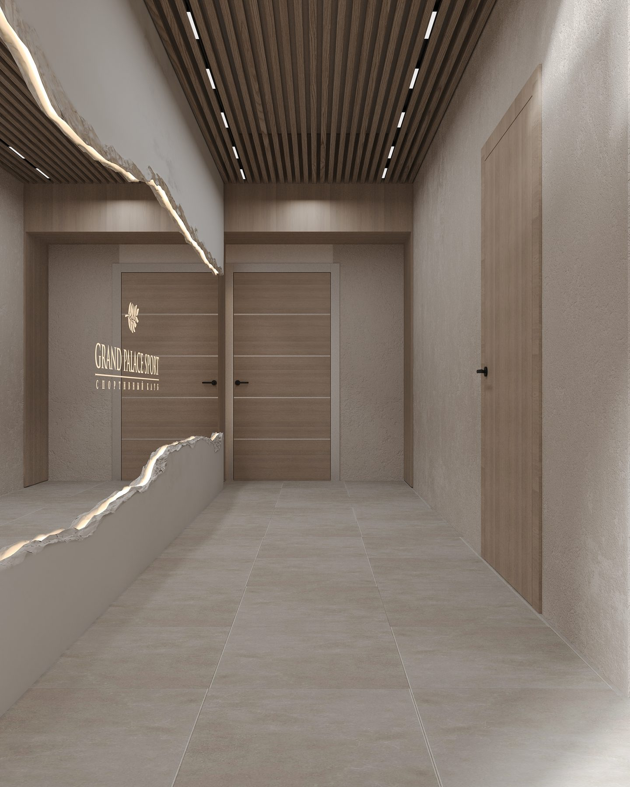

Зачем нужен
персональный тренер
Можно тренироваться самостоятельно — и это лучше, чем не тренироваться вовсе. Но если вы хотите быстрого, безопасного и устойчивого результата, персональный тренер становится не роскошью, а разумной инвестицией в себя. Разбираемся, что именно он даёт.
Правильная техника с первого дня
Большинство травм в зале случаются из-за неверной техники. Персональный тренер ставит правильные движения сразу, корректирует осанку и амплитуду, подбирает безопасные веса. Это особенно важно для новичков и тех, кто возвращается к спорту после перерыва.
Программа под ваши цели
Снижение веса, набор мышечной массы, реабилитация, подготовка к соревнованиям или просто хорошее самочувствие — у каждой цели свой путь. Тренер выстраивает программу под вашу физиологию, образ жизни и темп, а затем корректирует её по мере прогресса.
Самостоятельные тренировки дают результат. Тренировки с профессионалом дают результат быстрее и безопаснее.
Мотивация и дисциплина
Запланированная встреча с тренером — это обязательство, которое сложно отменить «по настроению». Поддержка специалиста помогает не бросить на полпути и проходить через плато, когда кажется, что прогресс остановился.
Контроль и обратная связь
Тренер отслеживает динамику, фиксирует результаты и вовремя меняет нагрузку, чтобы тело продолжало развиваться. Вы всегда понимаете, что и зачем делаете, — и видите, как меняется ваша форма.
Кому особенно полезны персональные тренировки
- Новичкам — чтобы избежать ошибок и травм на старте
- Занятым людям — чтобы получать максимум за ограниченное время
- При восстановлении после травм — под контролем специалиста
- Тем, кто вышел на плато и не видит прогресса
В клубе «Гранд-Палас Спорт» персональные тренировки проводят специалисты с профильным высшим образованием, спортивными званиями и международными сертификатами — в тренажёрном зале, бассейне, на теннисных кортах и в студии пилатеса во Всеволожске.